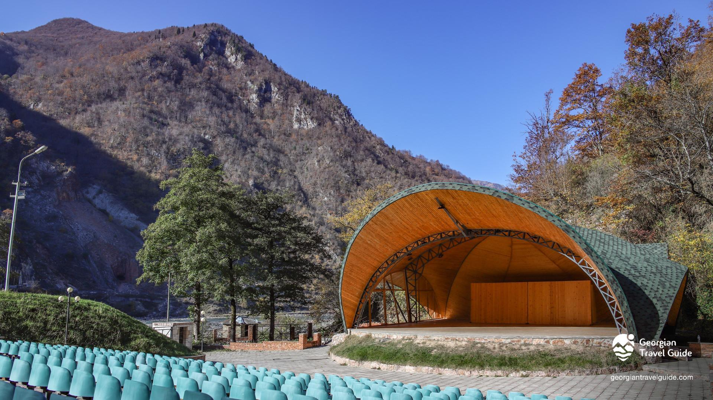
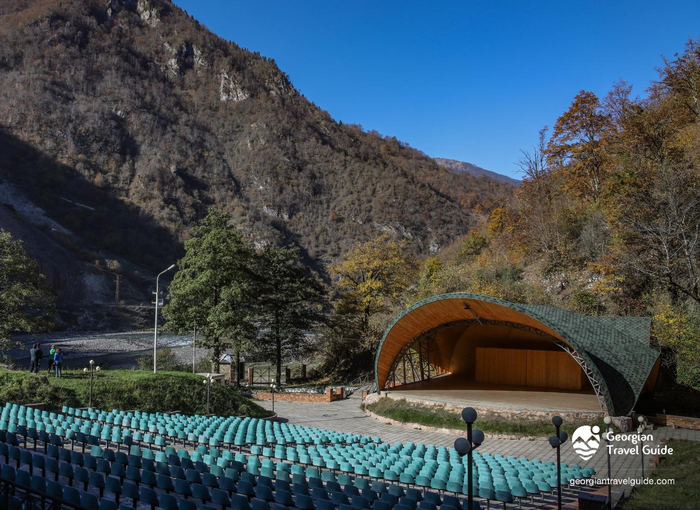
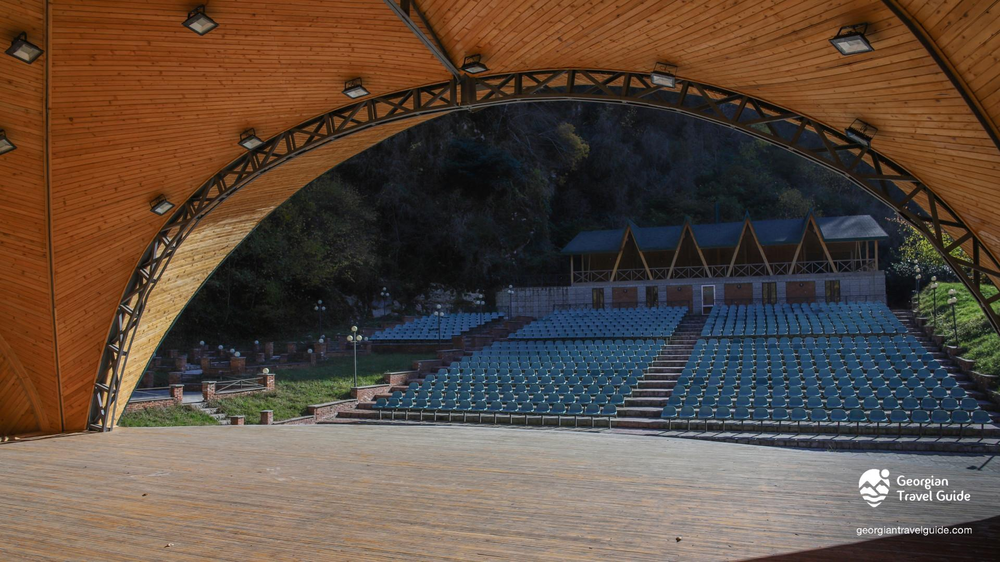

მწვანე თეატრი
მწვანე თეატრი - ლეჩხუმში, ცაგერის მუნიციპალიტეტში. გაშენდა 1987 წელს მდინარე ცხენისწყლის მახლობლად, რომლის ბადალი მსოფლიოში არ იყო. ეს საზაფხულო უმშვენიერესი თეატრი გადახურულია, ღია ცის ქვეშ გაკეთებულია მაყურებელთათვის სკამები. თეატრი წლების განმავლობაში მიტოვებული იყო, თუმცა თეატრის მიმდებარე ტერიტორია მოეწყო და ჩაუტარდა რესტავრაცია 2015 - 2017 წლებში.



მერია
რუსთაველის ქუჩა N 58
(+995) 599 18 24 25
tsagerimeria@gmail.com
საკრებულო
რუსთაველის ქუჩა N 69
(+995) 551 17 97 41
tsagerisakrebulo@gmail.com